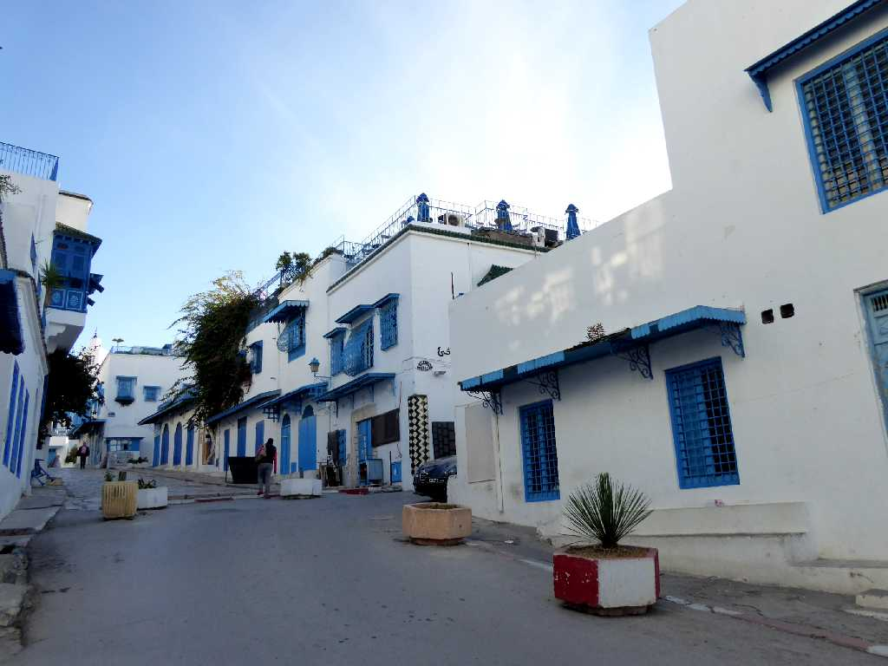
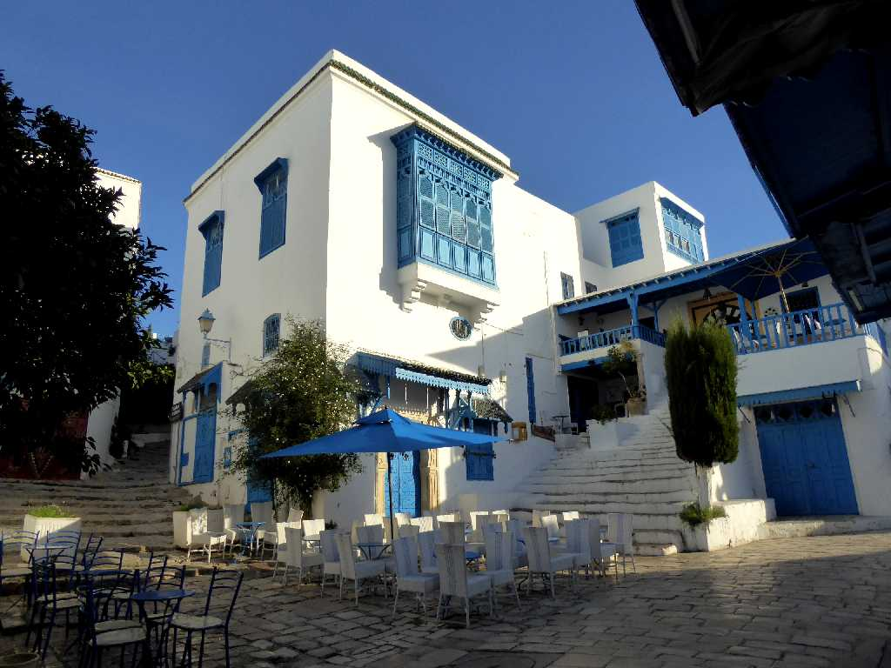
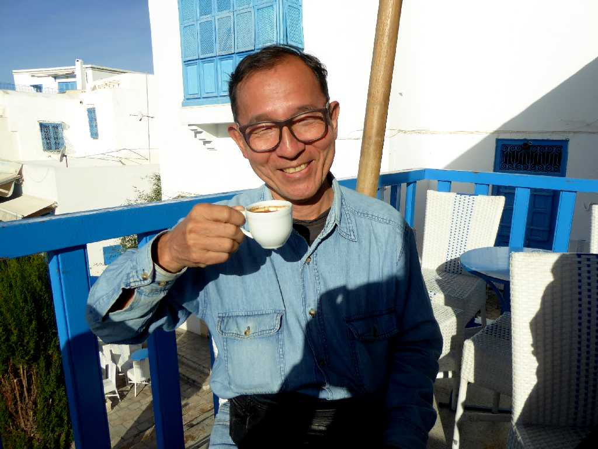

Sidi Bou Said Carthage
カルタゴ時代に灯台があったシディブサイドの住宅はアラブ建築とアンダルシア建築を組み合わせた白壁にチュニジアンブルーの扉が栄える白と青の小さな楽園と云われるチュニジアで最も美しい街

Cafe des Delices Sidi Bou Said
シディブサイドにある世界で最も古いカフェの一つと云われているカフェデデリス

November 22 2018 Cafe des Delices
カフェデデリスで本場チュニジアンコーヒーを味わう